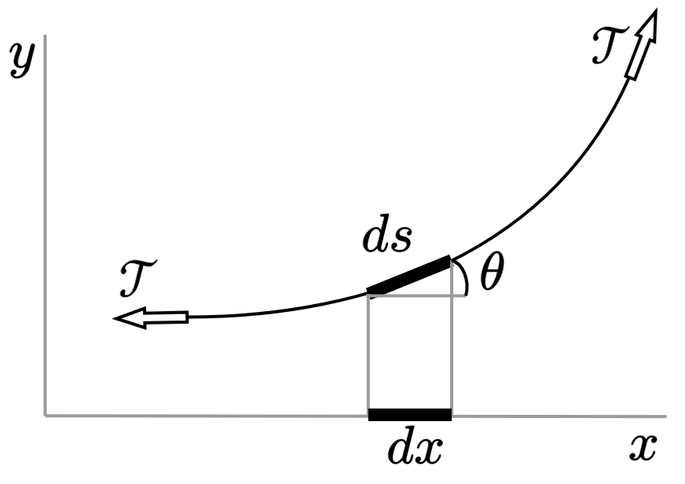

The linear wave equation for a string is derived. Kinetic and potential energy densities are then obtained. Energy conservation yields a differential equation that relates the total energy of the vibrating string to the energy flux. A differential equation for momentum conservation at quadratic order is then derived in terms of a parameter called the "radiation stress." The radiation force equals the time average of the difference in radiation stress ahead and behind the scatterer.
Consider a string with uniform mass per unit length \(\rho_0\) and constant tension \(\mathcal{T}\). The tension can be assumed to be constant because [11]
If the string is quite elastic, it has already been stretched quite a bit when it was put under tension \(T\); so the small increase in length involved in the displacement would not increase the tension by an appreciaciable amount.
The wave equation for the transverse displacement \(y = y(x,t)\) is derived by appealing to Newton's second law. As shown in the figure below, the transverse force is \(\mathcal{T}\sin [\theta(x + \Delta x)] - \mathcal{T}\sin[\theta(x)]\), where \(\theta(x,t)\) is the deflection angle of the string, where \(\theta =0\) coincides with the \(x\) axis:
Assuming \(\theta \ll 1\) allows for the transverse force to be written as \(\mathcal{T}[\theta(x + \Delta x) -\theta(x)]\). By Newton's second law, this force equals the mass \(\rho \Delta x\) times the acceleration \(\ddot{y}\): \[\rho_0\Delta x \ddot{y} = \mathcal{T}[\theta(x + \Delta x) -\theta(x)].\] Dividing this equation by \(\Delta x\) and taking the limit as \(\Delta x \to 0\) yields \[\rho_0 \ddot{y} = \mathcal{T}\frac{\partial \theta}{\partial x},\] Noting that \(\partial y /\partial x = \tan \theta \simeq \theta\) results in \begin{align}\label{eq:wave} \frac{\partial^2y}{\partial x^2} - \frac{1}{c_0^2} \frac{\partial^2y}{\partial t^2} = 0\,, \end{align} where the speed of the wave is \begin{equation}\label{eq:c} c_0 = \sqrt{\mathcal{T}/\rho_0}\,. \end{equation}
For an arbitrary transverse motion of the string, the associated kinetic energy density is \begin{align}\label{eq:kinetic} \boxed{{T} = \tfrac{1}{2}\rho_0 (\partial y/\partial t)^2 .} \end{align} To calculate the kinetic energy of the motion of a string of length \(\ell\), Eq. \eqref{eq:kinetic} is integrated, i.e., the kinetic energy is \(\tfrac{1}{2}\rho_0 \int_0^\ell (\partial y/\partial t)^2 dx\).
Obtaining the potential energy density of the string requires more effort. Displacing the string by \(\delta y\) corresponds to a differential length change of \begin{align}\label{eq:ds} \delta s = \frac{\partial s}{\partial x}dx = \frac{dx}{\cos\theta}\,, \end{align} as can be seen in the figure above. [Partial derivatives are used because \(s = s(x,t)\) and \(y = y(x,t)\).] Since \(1/\cos\theta = \sqrt{1+ \tan^2\theta}\), and since \(\tan\theta = \partial y/\partial x\), Eq. \eqref{eq:ds} becomes \begin{align}\label{eq:ds:2} \delta s = \sqrt{1 + (\partial y/\partial x)^2} \, dx \simeq \big[1 + \tfrac{1}{2}(\partial y/\partial x)^2\big] dx\,, \end{align} where the approximation neglects terms cubic in \(\partial y/\partial x\). Deforming the string from having an original length of \(\ell\) to a new length \(\ell + \delta s\) amounts to a total length change of \begin{align}\label{eq:length} \int_0^\ell \sqrt{1 + (\partial y/\partial x)^2} \, dx - \ell \simeq \int_0^\ell \big[1 + \tfrac{1}{2}(\partial y/\partial x)^2\big] dx - \ell = \tfrac{1}{2} \int_0^\ell (\partial y/\partial x)^2 dx\,. \end{align} The work done in deforming the string equals the force times the displacement. Since \(\mathcal{T}\) is a constant, the work done is simply \(\mathcal{T}\) times Eq. \eqref{eq:length}: \begin{align}\label{eq:W} W = \tfrac{1}{2} \mathcal{T} \int_0^\ell (\partial y/\partial x)^2 dx\,. \end{align} The quantity \begin{equation}\label{eq:potential} \boxed{{U} = \tfrac{1}{2} \mathcal{T} (\partial y/\partial x)^2} \end{equation} is identified to be the potential energy density of the string. {See p. 101 of Ref. [11] for a discussion on the limitations of this interpretation.}
Since \(\mathcal{T}\) is a constant, Eq. \eqref{eq:wave} can be written as \begin{align}\label{eq:wave:1} \frac{\partial}{\partial x} \left( -\mathcal{T} \frac{\partial y}{\partial x}\right) + \rho_0 \frac{\partial^2 y}{\partial t^2} = 0\,. \end{align} Multiplying Eq. \eqref{eq:wave:1} by \(\partial y/\partial t\) yields \begin{align}\label{eq:wave:2} \frac{\partial y}{\partial t}\frac{\partial}{\partial x} \left( -\mathcal{T} \frac{\partial y}{\partial x}\right) + \frac{\rho_0}{2} \frac{\partial }{\partial t}\left(\frac{\partial y}{\partial t} \right)^2 = 0\,, \end{align} where it has been noted in the second term of Eq. \eqref{eq:wave:2} that \[\frac{\partial y}{\partial t} \frac{\partial^2 y}{\partial t^2} = \frac{1}{2}\frac{\partial\dot{y}^2}{\partial t}\,.\] In view of Eq. \eqref{eq:kinetic}, the third term of Eq. \eqref{eq:wave:2} is the time rate of change of the kinetic energy \({T}\). Since \[\frac{\partial y}{\partial t}\frac{\partial^2 y}{\partial x^2} = \frac{\partial }{\partial x}\left( \frac{\partial y}{\partial x}\frac{\partial y}{\partial t} \right) - \frac{\partial^2 y}{\partial x\partial t} \frac{\partial y}{\partial x}\,,\] Eq. \eqref{eq:wave:2} becomes \begin{align}\label{eq:wave:3} \frac{\partial}{\partial x} \left( -\mathcal{T} \frac{\partial y}{\partial x} \frac{\partial y}{\partial t}\right) + \mathcal{T}\frac{\partial^2 y}{\partial x \partial t}\frac{\partial y}{\partial x} + \frac{\partial {T}}{\partial t} = 0\,, \end{align} At this juncture, it is noted from the figure above that the force exerted by an element of the string on the left on an element to its right is \(-\mathcal{T}\partial y/\partial x\). The associated power is the force times the velocity \(\partial y/\partial t\) of this motion. The quantity appearing in the spatial derivative in the first term of Eq. \eqref{eq:wave:3} is therefore the energy flux of the string, \begin{align}\label{eq:poynting} I \equiv -\mathcal{T} \frac{\partial y}{\partial x} \frac{\partial y}{\partial t}\,, \end{align} which can be thought of as the "Poynting scalar" (analogous to the Poynting vector of acoustics and electrodynamics). Meanwhile, the second term of Eq. \eqref{eq:wave:3} is simplified by noting that \begin{align}\label{eq:potential:2} \mathcal{T}\frac{\partial^2 y}{\partial x \partial t}\frac{\partial y}{\partial x} = \frac{\mathcal{T}}{2} \frac{\partial}{\partial t}\left(\frac{\partial y}{\partial x} \right)^2= \frac{\partial {U}}{\partial t}\,, \end{align} where the last equality holds by Eq. \eqref{eq:potential}. In view of Eqs. \eqref{eq:poynting} and \eqref{eq:potential:2}, Eq. \eqref{eq:wave:3} becomes the energy conservation equation, \begin{align}\label{eq:energy} \boxed{\frac{\partial I}{\partial x} + \frac{\partial}{\partial t}({U} + {T}) = 0\,.} \end{align} By analogy to acoustics and electrodynamics, Eq. \eqref{eq:energy} might also be regarded as the Poynting theorem for waves on a string. Equation \eqref{eq:energy} recovers Eq. (4.1.11) of Ref. [11], though the mathematical development leading to Eq. \eqref{eq:energy} makes it more rigorous than what is presented in Ref. [11].
A momentum conservation equation at quadratic order can be obtained by multiplying Eq. \eqref{eq:wave} through by \(\partial y/\partial x\), \begin{align}\label{eq:wave:4} \frac{\mathcal{T}}{c_0^2} \frac{\partial}{\partial t}\left( \frac{\partial y}{\partial x} \frac{\partial y}{\partial t}\right) = \rho_0 \frac{\partial^2 y}{\partial t\partial x} \frac{\partial y}{\partial t} + \mathcal{T} \frac{\partial^2 y}{\partial x^2} \frac{\partial y}{\partial x}\,, \end{align} where Eq. \eqref{eq:c} has been invoked, and where it has been noted that \begin{align*} \frac{\partial}{\partial t}\left(\frac{\partial y}{\partial x} \frac{\partial y}{\partial t}\right) - \frac{\partial^2 y}{\partial t \partial x} \frac{\partial y}{\partial t} = \frac{\partial y}{\partial x}\frac{\partial^2 y}{\partial t^2}\,. \end{align*} Multiplying Eq. \eqref{eq:wave:4} through by \(-1\) and rearranging terms yields \begin{align}\label{eq:wave:5} \frac{1}{c_0^2} \frac{\partial}{\partial t}\left(-\mathcal{T} \frac{\partial y}{\partial x} \frac{\partial y}{\partial t}\right) = - \mathcal{T} \frac{\partial^2 y}{\partial x^2} \frac{\partial y}{\partial x} -\rho_0 \frac{\partial^2 y}{\partial t\partial x} \frac{\partial y}{\partial t}\,, \end{align} The quantity in the time derivative on the left-hand side of Eq. \eqref{eq:wave:5} is identified from Eq. \eqref{eq:poynting} to be the Poynting scalar \(I\). Dividing \(I\) by \(c_0^2\) yields a momentum density, \begin{align}\label{eq:g} g \equiv I/c_0^2\,. \end{align}
Attention is now turned to the right-hand side of Eq. \eqref{eq:wave:5}. Since \begin{align*} \frac{\partial^2 y}{\partial x^2} \frac{\partial y}{\partial x} = \frac{1}{2}\frac{\partial}{\partial x}\left( \frac{\partial y}{\partial x}\right)^2,\qquad \frac{\partial^2 y}{\partial t\partial x} \frac{\partial y}{\partial t} = \frac{1}{2}\frac{\partial}{\partial x}\left( \frac{\partial y}{\partial t}\right)^2, \end{align*} Eq. \eqref{eq:wave:5} becomes \begin{align}\label{eq:wave:6} \frac{\partial g}{\partial t} = - \frac{\mathcal{T}}{2}\frac{\partial}{\partial x}\left( \frac{\partial y}{\partial x}\right)^2 - \frac{\rho_0}{2}\frac{\partial}{\partial x}\left( \frac{\partial y}{\partial t}\right)^2. \end{align} By Eqs. \eqref{eq:kinetic} and \eqref{eq:potential}, Eq. \eqref{eq:wave:6} becomes \begin{align}\label{eq:wave:7} \frac{\partial g}{\partial t} = \frac{\partial}{\partial x} (-{T} - {U})\,. \end{align} The quantity \(-{T} - {U}\) can be written as \(L - 2{T} = L - \rho_0(\partial y/\partial t)^2\), where \(L\) is the Lagrangian density \(L = {T} - {U}\). Equation \eqref{eq:wave:7} then becomes \begin{align}\label{eq:momentum} \boxed{\frac{\partial g}{\partial t} = \frac{\partial S}{\partial x}\,,} \end{align} where \begin{align}\label{eq:stress} S \equiv L - \rho_0 ({\partial y}/{\partial t})^2. \end{align} is the radiation stress. The integral form of Eq. \eqref{eq:momentum} is \begin{align}\label{eq:momentum:int} S(b)-S(a) - \frac{d }{dt}\int_a^b g\, dx =0 \,, \end{align} where the first two terms follow from the fundamental theorem of calculus.
Equation \eqref{eq:momentum:int} was derived by integrating over free space, which implies that there is no change of mechanical momentum from points \(a\) to \(b\) per unit time. If there is an object between points \(a\) and \(b\), then the right-hand side of Eq. \eqref{eq:momentum} equals \(d{p}_\mathrm{mech}/dt\), which according to Newton's second law is the force \(F\) on the object. In particular, if attention is confined to time-harmonic solutions \(y\), time-averaging Eq. \eqref{eq:momentum:int} results in \(\frac{d }{dt}\int_a^b g\, dx\) vanishing by virtue of Item 2 of the useful identities. The radiation force is therefore \begin{align}\label{eq:F} \boxed{F = \langle S(b)\rangle - \langle S(a) \rangle\,.} \end{align}
The evaluation of Eq. \eqref{eq:F} is further specified by noting that in scattering problems, the total field is given by the sum of the incident and scattered fields, i.e., \(y = y_i + y_s\), where the subscripts "\(i\)" and "\(s\)" denote the incident and scattered fields, respectively. Thus \begin{align}\label{eq:total:x} \frac{\partial y}{\partial x}&= \frac{\partial y_i}{\partial x} + \frac{\partial y_s}{\partial x}\,,\\ \frac{\partial y}{\partial t}&= \frac{\partial y_i}{\partial t} + \frac{\partial y_s}{\partial t}\,.\label{eq:total:t} \end{align} In view of Eqs. \eqref{eq:total:x} and \eqref{eq:total:t}, the radiation stress tensor reads \begin{align} S = L_i + L_s + L_{is} - \rho_0 (\partial y_i/\partial t)^2 - \rho_0 (\partial y_s/\partial t)^2 -2\rho_0(\partial y_i/\partial t)(\partial y_s/\partial t)\,, \end{align} where \begin{align} L_i &= \tfrac{1}{2}\rho_0 (\partial y_i/\partial t)^2 - \tfrac{1}{2}\mathcal{T} (\partial y_i/\partial x)^2\\ L_s &= \tfrac{1}{2}\rho_0 (\partial y_s/\partial t)^2 - \tfrac{1}{2}\mathcal{T} (\partial y_s/\partial x)^2\\ L_{is} &= \rho_0 (\partial y_i/\partial t)(\partial y_s/\partial t) - \mathcal{T} (\partial y_i/\partial x) (\partial y_s/\partial x)\,. \end{align}
If \(y = y_i + y_s\) can be calculated, and if its derivatives with respect to \(x\) and \(t\) can be taken, the radiation force can be calculated by Eq. \eqref{eq:F}.
Two important cases of Eq. \eqref{eq:F} are incident (1) traveling waves and (2) standing waves. I presented a few examples of for radiation force due to traveling waves on a point mass at the Texas Acoustics seminar. During the Q&A, I demonstrated radiation forces exerted by standing waves on a string. Results for radiation forces exerted by progressive waves on extended scatterers will be presented at the 189th ASA meeting in Honolulu (December 2025).